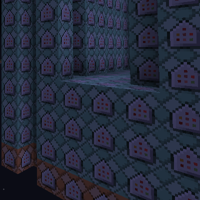

源码来自工程『少女终末旅行』
InheritExpression.SetCompareLists(System.Windows.Forms.Application.StartupPath + "\\test");
//生成TimeLine(时间序列)
var a = new TimeLine().Serialize(MidiPath.Text, WavePath.Text, 0, 10, 10, 4);
a.Sound_InheritExpression("%p");//设置子表达式
//设定音轨及其音色
a.Sound_StopSound(true);//启用/stopsound
a.Sound_ExtraDelay(3);//所有音轨的发生发声延长3tick
a.Sound_SoundName("9", "9");//用法：timeLine.Sound_SoundName("音色名称","音轨名称","乐器名称")
a.Sound_SoundName("33c", "33"); a.Sound_ExtraDelay(4, "33");//用法：timeLine.Sound_SoundName(延长时间[刻],"音轨名称","乐器名称")
a.Sound_SoundName("39", "39");
a.Sound_SoundName("51c", "51");
a.Sound_SoundName("7", "7"); a.Sound_StopSound(false, "7");
a.Sound_SoundName("1", "1"); a.Sound_PercVolume(110, "1"); a.Sound_StopSound(false, "1");//对"1"(钢琴)禁用/stopsound
a.Sound_SoundName("5c", "5"); a.Sound_ExtraDelay(4, "5");
a.Sound_SoundName("8", "8");
a.Sound_SoundName("26c", "26");
a.Sound_SoundName("0.44", "Pedal Hi-Hat");
a.Sound_SoundName("0.36", "Bass Drum1");
a.Sound_SoundName("0.47", "Low-Mid Tom");
a.Sound_SoundName("0.59", "Ride Cymbal2");
a.Sound_SoundName("0.58", "Vibra-slap"); a.Sound_ExtraDelay(10, "Vibra-slap");
//禁用&启用特定的音轨
a.EnableMidi(false);//Midi序列全部禁用
a.EnableWave(false, -1, "Right");//Wave序列的右声道全部禁用
a.EnableMidi(true, "", "", -1, "PlaySound");//启用Midi序列的/playsound
a.EnableMidi(false, "D", "", -1, "PlaySound");//禁用下列音轨的/playsound
a.EnableMidi(false, "X", "", -1, "PlaySound");
a.EnableMidi(false, "R", "", -1, "PlaySound");
a.EnableMidi(false, "F", "", -1, "PlaySound");
a.EnableMidi(true, "D", "", -1, "Pitch");
a.EnableMidi(true, "X", "", -1, "Pitch");
a.EnableMidi(true, "R", "", -1, "Pitch");
a.EnableMidi(true, "F", "", -1, "Pitch");//这些音轨用于输出它们音高值到计分板
a.EnableMidi(true, "Low-Mid Tom", "", -1, "Velocity");
a.EnableMidi(true, "Pedal Hi-Hat", "", -1, "Velocity");
a.EnableMidi(true, "Ride Cymbal2", "", -1, "Velocity");
a.EnableMidi(true, "Vibra-slap", "", -1, "Velocity");//这些音轨除了用于/playsound还将输出它们速率(力度)到计分板
//生成CommnandLine(命令序列)
var b = new CommandLine().Serialize(a);
//读取AMLrc(命令序列)嵌入命令序列
var lrc = new AMLrc().Serialize(LrcPath.Text).AMLrcLine;
b = b.Combine(b, lrc);
//生成schematic文件
new Schematic().ExportSchematic(b, new ExportSetting() { AlwaysActive = true, AlwaysLoadEntities = false, Direction = 0, Width = 5 }, "E:\\time.schematic");
a.EnableMidi(false, "D", "", -1, "PlaySound"); a.EnableMidi(true, "D", "", -1, "Pitch");
音轨"D"是我们为了输出计分板专门独立出的一条的音轨，上面两行即禁用其播放同时输出音高。
接下来我们可以进入Minecraft内查看留下来的接口。（从初始化命令中查看，即命令流最开头处）

计分板接口遵循以下命名规则：
键的计分板有以下几个：
波形的计分板有以下几个：
实体对象共有的标签为"AudioRiptideNode"。若按命名规则标签中出现了非大小写字母或下划线，该字符被替换为下划线。
储存键信息的实体有三个标签，分别为特有标签、音轨、乐器
track(5)_instrument(5)_index
取音轨的前五个字符、乐器的前五个字符与键的索引（按照出现顺序）
例如表示音轨"Track"，乐器"Instrument"，同时出现的第3个键：
Track_Instr_3
t_track
音轨名前加上"t_"即可。（空格被替换为下划线）
i_instrument
乐器名前加上"i_"即可。（空格被替换为下划线）
储存波形信息的实体命名规则很简单：
wave_index_r/l
索引与采样数有关，后面的r或l代表右声道或左声道。
fill -20 6 17 -20 13 17 air 0 replace minecraft:stained_glass execute @e[tag=wave0_l_0,score_Fre_min=18] ~ ~ ~ setblock -20 6 17 minecraft:stained_glass 14 execute @e[tag=wave0_l_0,score_Fre_min=36] ~ ~ ~ setblock -20 7 17 minecraft:stained_glass 14 execute @e[tag=wave0_l_0,score_Fre_min=54] ~ ~ ~ setblock -20 8 17 minecraft:stained_glass 14 execute @e[tag=wave0_l_0,score_Fre_min=72] ~ ~ ~ setblock -20 9 17 minecraft:stained_glass 14 execute @e[tag=wave0_l_0,score_Fre_min=90] ~ ~ ~ setblock -20 10 17 minecraft:stained_glass 14 execute @e[tag=wave0_l_0,score_Fre_min=108] ~ ~ ~ setblock -20 11 17 minecraft:stained_glass 14 execute @e[tag=wave0_l_0,score_Fre_min=126] ~ ~ ~ setblock -20 12 17 minecraft:stained_glass 14
这是波形可视化中对频率的一段Function，基本方法就是遍历。通过对计分板接口的值遍历，达到可视化的效果。如果利用方块作为可视化对象，别忘了重置以更新。